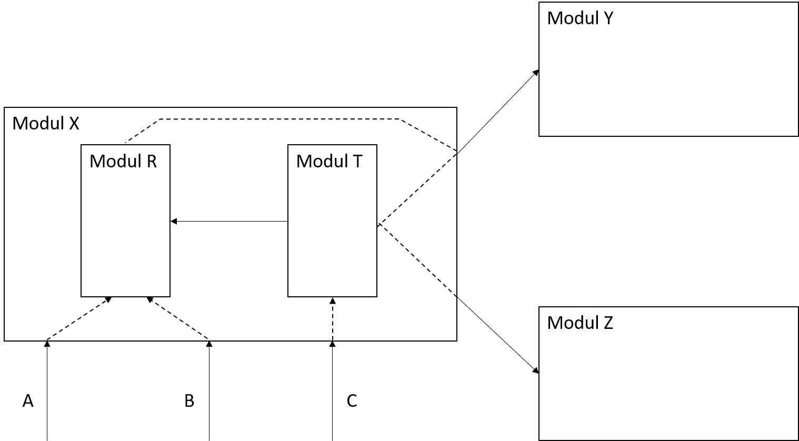

Kategorien von Modulen
Marcel Lüthi
Departement Mathematik und Informatik
Textuelle Modulbeschreibung
module X
uses Y, Z;
exports
var A: INTEGER;
type B: array (1..10) of REAL;
procedure C(D: in out B; E: in INTEGER; F: in REAL);
function F(G : INTEGER) : INTEGER
implementation
is composed of R, T
end X
- Syntax soll keiner realen Programmiersprache entsprechen
- Lässt uns idealisierte Konzepte ausdrücken
Modul Spezifikation - Beispiel

module X
uses Y, Z;
exports
var A: INTEGER;
type B: array (1..10) of REAL;
procedure C(D: in out B; E: in INTEGER; F: in REAL);
implementation
is composed of R, T
end X
Modul Spezifikation - Beispiel
module R
uses Y;
exports
type B: array (1..10) of REAL;
procedure C(D: in out B; E: in INTEGER; F: in REAL);
implementation
...
end R
Modul Spezifikation - Beispiel
module T
uses Y, Z, R;
exports
var A: INTEGER;
implementation
...
end T
Beispielmodul: Prozedur/Funktion
- Kapselung eines einzelnen Algorithmus
function sort (a: in array of REAL) : array of REAL
Beispielmodul: Funktionsbibliothek
- Kapselung einer Klasse von Algorithmen
module MathLib
exports
function log(REAL in value) : REAL;
function square(REAL in value) : REAL;
...
implementation
...
end MathLib
Beispielmodul: Datenpool
- Teilen von gmeinsam genutzten Daten
module Datapool
exports
var maxNumberOfUsers : INTEGER;
var maxItemsPerUser : INTEGER;
...
end Datapool
- Typische Anwendung: Konfigurationseinstellungen
Sollte in Praxis nicht verwendet werden!
- Datenzugriff muss gekapselt sein.
Beispielmodul: Objekt
module Stack
exports
procedure push(VAL : in INTEGER);
procedure pop(VAL : out INTEGER);
...
implementation
var STACK : array of INTEGER;
var STACKPOINTER : INTEGER;
end Stack
- Eintspricht einem (singleton) Objekt in objektorientierten Programmiersprachen
Achtung: Objekt != Klasse
Beispielmodul: Abstrakter Datentyp
module STACK_ADT
exports
type STACK = ? // typ implementation ist abstrakt
procedure push(S : in out STACK ; VAL: in INTEGER);
procedure pop(S : in out STACK; VAL: out INTEGER);
function empty (S: in STACK) : BOOLEAN;
...
implementation
end STACK_ADT
function create() : STACK
- Beschreibt Eigenschaften von Datenstruktur via Funktionen / Prozeduren
- Datenrepräsentation ist abstrakt
- Datenstruktur wird gekapselt
Abstrakte Datentypen
- Erlaubt Erweiterung der Sprache durch eigene Abstraktionen
- Objekt kann aus ADT mit Konstruktor funktion gebaut werden
function create() : STACK
Liskov, B., & Zilles, S. (1974, March).
Programming with abstract data types.
Generische Module
module GENERIC_STACK(T)
exports
procedure push(VAL : in T);
procedure pop(VAL : out T);
...
implementation
var STACK : array of T;
var STACKPOINTER : INTEGER;
end GENERIC_STACK
module INTEGER_STACK is GENERIC_STACK(INTEGER);
- Beispiel des Prinzips Abstraktion
- Details vom Type T werden abstrahiert